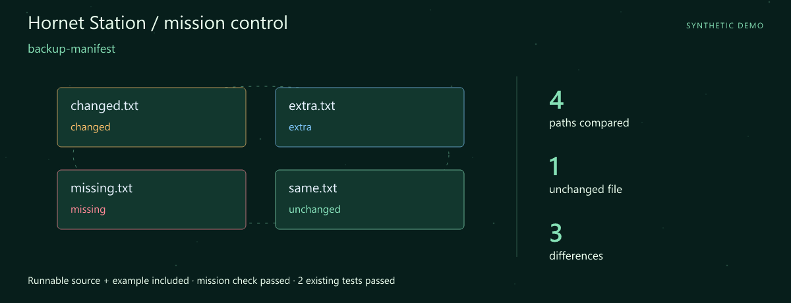
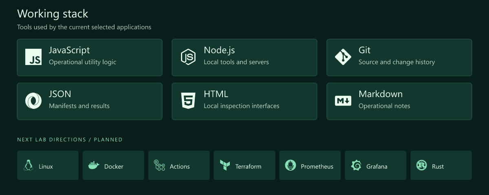
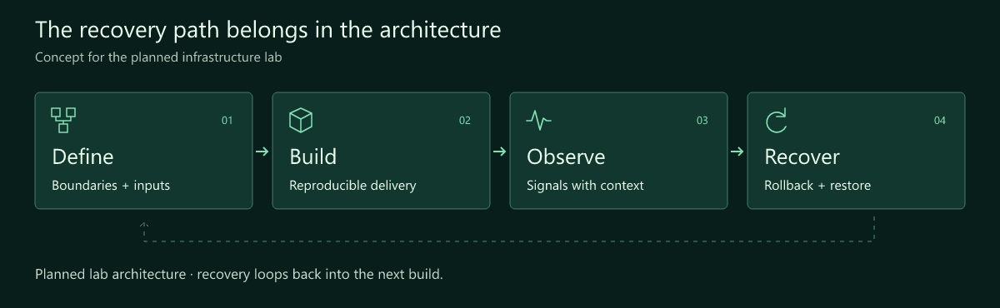
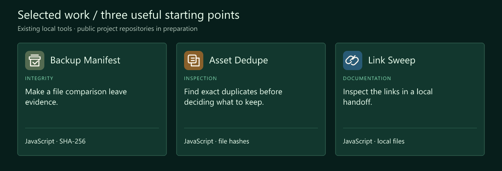
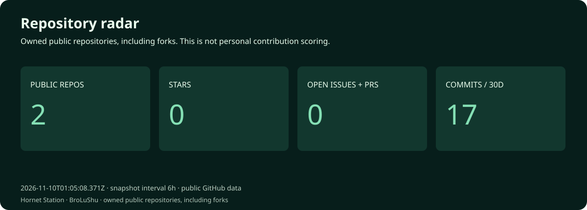
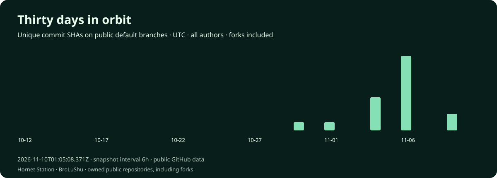
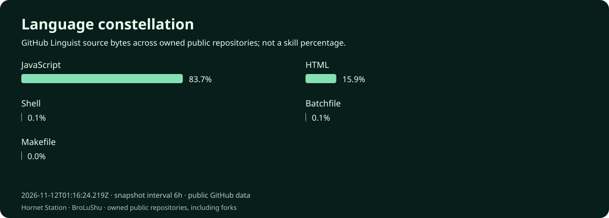
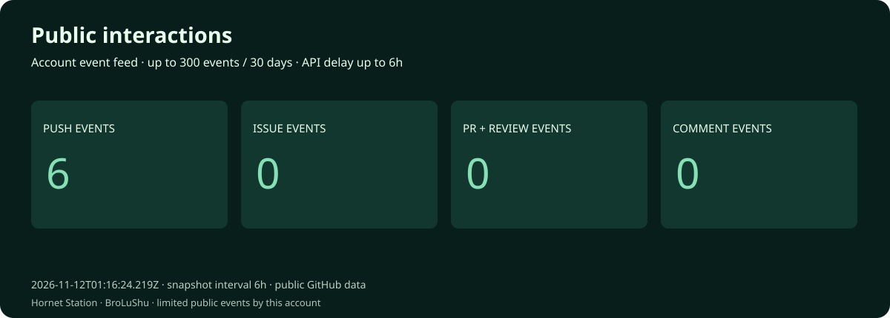

Lü Shu · DevOps Engineer · Systems Architecture
Hornet Station · Every system needs a way home.
Build the system. Understand the signals. Design the recovery.
Download the runnable mission · Launch guide · Working stack · Selected work
Mission control

First launch: backup-manifest. A complete source snapshot, synthetic example and assertion script are included. The mission check and 2 existing tests passed. Try the mission · Snapshot and checked result.
I'm Lü Shu. My focus is DevOps and systems architecture. This workspace connects practical operational tools with a planned infrastructure lab: reproducible delivery, observable behaviour and a recovery procedure someone else can follow.
I want the architecture diagram, the deployment notes and the restore procedure to tell the same story. The first building blocks here are deliberately inspectable: hashes, manifests and local documentation checks.
What I focus on
- Architecture with boundaries. Make inputs, responsibilities and failure paths visible before a deployment.
- Operational evidence. A manifest, a useful signal or a documented check should support the next decision.
- Recovery as part of the design. Plan the rollback and restore alongside the build, then exercise them in a lab.
Working stack

The upper panel shows technologies used by the selected tools. The lower row is the next lab track.
How I think about the work

Selected work
Three existing local tools form this curated collection. Their public project repositories are being prepared.

| Project / stack | Why it belongs here | Input → output |
|---|---|---|
| Backup Manifest JavaScript · SHA-256 |
Make a file comparison leave evidence. Create SHA-256 manifests and compare a set of files with an expected manifest. | In: Files + optional manifest Out: Hashes and comparison findings |
| Asset Dedupe JavaScript · file hashes |
Find exact duplicates before deciding what to keep. Hash selected assets and list exact duplicates for a separate review decision. | In: Selected files Out: Exact-duplicate groups |
| Link Sweep JavaScript · local files |
Inspect the links in a local handoff. Check internal references in a local documentation export. | In: Local export files Out: Internal-link findings |
The first lab, drawn before it is deployed
versioned inputs → build → deploy → observe
↑ │
└── recover ───┘
A design sketch for the planned lab. Backup Manifest supplies file-integrity evidence; a complete restore procedure will also need configuration, storage and an exercised recovery path.
Code and activity




These charts record one successful daily statistics snapshot after the workflow is enabled. Four attempts per day provide retries. Snapshot commits are labelled automated and authored by github-actions[bot], not personal coding contributions. The observation time is printed on every chart. Commits are unique default-branch SHAs across all authors and owned public repositories, including forks. Language bytes describe repositories, not personal skill. Public interactions are a limited event feed (up to 300 events / 30 days), not visitor analytics. API and image caches may delay updates.
Live data and scope · Portfolio website · Refresh setup
Next lab
- A repeatable deployment. Document one Linux/container lab with explicit configuration inputs.
- A useful observation loop. Explore Prometheus and Grafana around a small service.
- An exercised recovery. Record rollback and restore steps, expected results and the evidence.
Start a conversation
A recovery scenario, an unclear boundary or an operational check that needs a better explanation is a useful topic for the architecture notebook.
Open the profile repository's issues · Browse the repositories
🛠️ Designing systems that can recover.
Fictional developer persona · AI-illustrated avatar. Curated tools retain original authors, licenses and commit history. Technology icons: Simple Icons.